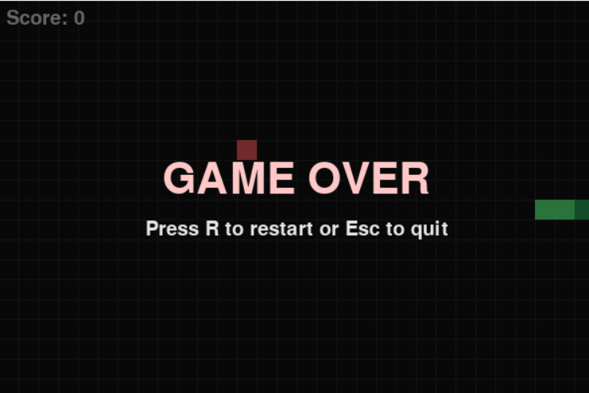

Bryan Paskah Telaumbanua
Sedang menekuni pengumpulan, pengolahan dan pembagian data melalui pembelajaran dan praktik.
Tentang Saya
Saya adalah seorang mahasiswa semester 3 program studi Sains Data (S1) Institut Teknologi Sumatera. Saya memiliki minat dan ketertarikan pada bagaimana seseorang dapat mengolah dan menciptakan suatu model sebagai solusi dari suatu masalah. Data Scientist (Ilmuwan Data) adalah seorang profesional yang menggunakan keahlian ilmiah dan teknis untuk menganalisis data dalam jumlah besar (Big Data) guna menemukan pola, tren, dan wawasan (insights) tersembunyi. Saya sebagai seorang mahasiswa program studi Sains Data
Keahlian Saya
HTML
CSS
JavaScript
Python
Git & GitHub
Portofolio

Snake Game
PYTHON
Hubungi Saya
Punya pertanyaan, kritik dan saran ? Langsung saja......